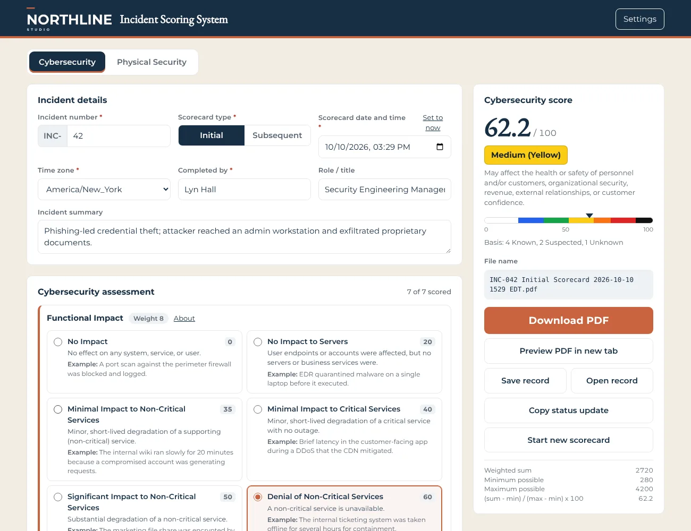
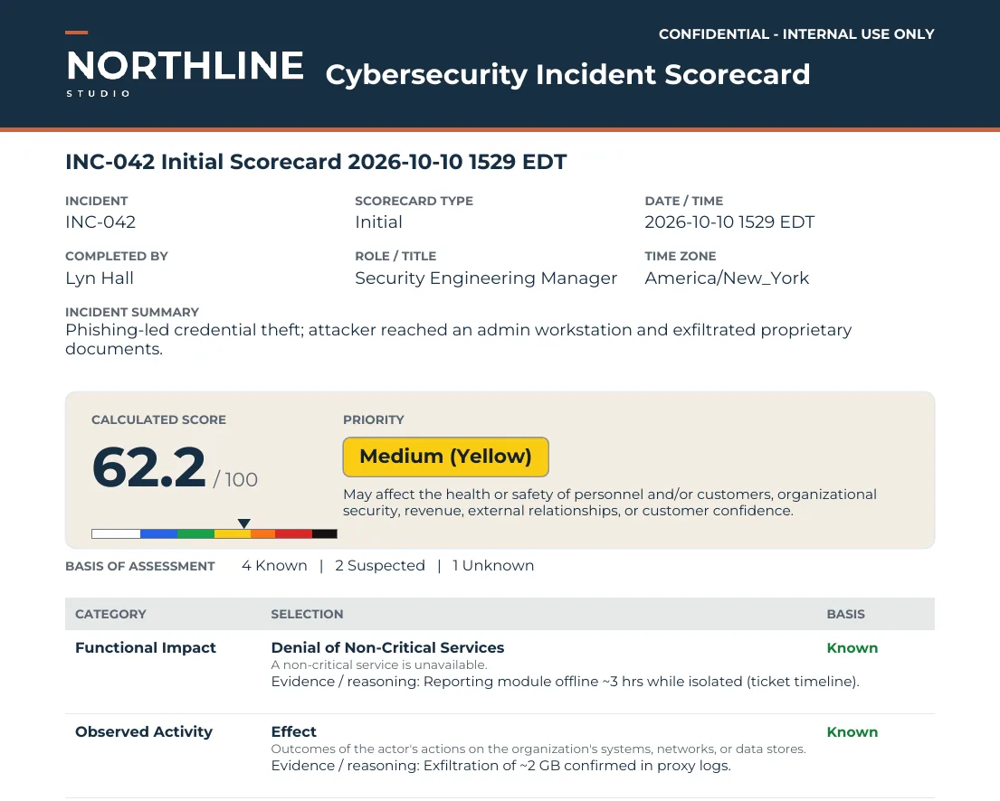

AI-01In use
Incident Scoring System
A stand-alone scorecard that turns a responder's assessment into a 0 to 100 severity score, a priority level, an evidence-ready PDF, and a status update for the incident platform. It covers cybersecurity and physical security incidents and can be rebranded and re-weighted for any organization in minutes. It now also runs as a Google app inside Google Workspace, with access limited to approved accounts and PDFs saved straight to a shared drive.
- Domain
- Incident response, physical security
- Frameworks
- NIST SP 800-61, CISA NCISS, ODNI threat framework, Purdue model
- Delivered as
- Google Workspace app or single offline HTML file, PDF output, Claude Project branding kit
What the rebuild caught: the legacy spreadsheet hard-coded its normalization range from an older set of weights. Its own sample incident scored 86.5 (Severe) when the correct result was 62.2 (Medium). The new tool recalculates the range whenever weights change.


What it does
- Weighted scoring across seven or eight categories, normalized to 0 to 100 and mapped to a seven-level priority scale
- Each option shows a plain description and a real-world example, so different responders score the same way
- Each category records a basis (Known, Suspected, Unknown) and the evidence behind it
- Initial and subsequent scorecards with automatic file naming: INC-### Initial Scorecard YYYY-MM-DD HHMM TZ
- One-click status update for incident.io, Slack, or Teams, with a recommended platform severity
Safeguards
- The offline edition runs in a browser with no server, account, or data sent anywhere
- The Google Workspace edition limits use to approved Google accounts and saves PDFs to the organization's own shared drive
- Weights, options, and thresholds are editable per company, then can be locked in a distributed copy
- A Claude Project reads a company's brand guide and produces the branding file, with accessibility contrast checks and licensed-font rules
- Every PDF names who scored it, when, in which time zone, and what remains unconfirmed
Google Workspace edition
- Runs as a Google app inside Google Workspace, so responders sign in with their existing Google accounts
- Access is limited to the specific Google accounts the organization approves
- A Settings button lets admins change the scoring weights and where PDFs are saved
- Setting changes take effect only after a second person approves them, keeping separation of duties between who edits and who approves
- Settings link a Google shared drive folder, and every scorecard PDF is saved there automatically for the incident evidence record
Sample status update
**INC-042 Cybersecurity scorecard (Subsequent): 62.2 / 100, Medium (Yellow)** Recommended incident.io severity: **SEV3** Change from prior scorecard: +13.7 (was 48.5, Low). Priority raised to Medium. Confidence: 4 Known, 2 Suspected, 1 Unknown. **Open items to confirm:** Actor Characterization (Suspected), Recoverability (Suspected), Potential Impact (Unknown). Re-score when these are confirmed. Full scorecard: INC-042 Subsequent Scorecard 2026-10-10 1529 EDT.pdf (Incident Evidence repository)
Try the live demo
Fully interactive, including PDF download. Opens in a new tab.